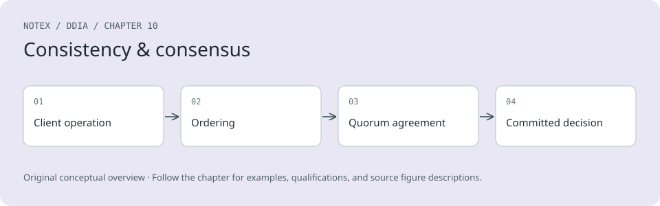

Chapter 10. Consistency and Consensus
An ancient adage warns, “Never go to sea with two chronometers; take one or three.”
Frederick P. Brooks Jr., The Mythical Man-Month: Essays on Software Engineering (1995)
Lots of things can go wrong in distributed systems, as discussed in Chapter 9. If we want a service to continue working correctly despite those things going wrong, we need to find ways of tolerating faults.
One of the best tools we have for fault tolerance is replication. However, as we saw in Chapter 6, having multiple copies of the data on multiple replicas increases the risk of inconsistencies. Reads might be handled by a replica that is not up-to-date, yielding stale results. If multiple replicas can accept writes, we have to deal with potential conflicts between values that were concurrently written on different replicas. At a high level, we have two competing philosophies for dealing with such issues:
Eventual consistency
In this philosophy, the fact that a system is replicated is made visible to the application, and you as the application developer are expected to deal with the inconsistencies and conflicts that may arise. This approach is often used in systems with multi-leader (see “Multi-Leader Replication”) and leaderless replication (see “Leaderless Replication”).
Strong consistency
This philosophy says that applications should not have to worry about internal details of replication and that the system should behave as if it were a single node. The advantage of this approach is that it’s simpler for you, the application developer. The disadvantage is that stronger consistency has a performance cost, and some kinds of fault that an eventually consistent system can tolerate cause outages in strongly consistent systems.
As always, which approach is better depends on your application. If your app allows users to make changes to data while offline, eventual consistency is inevitable, as discussed in “Sync Engines and Local-First Software”. However, eventual consistency can be difficult for applications to deal with. If your replicas are located in datacenters with fast, reliable communication, strong consistency is often appropriate because its cost is acceptable.
In this chapter we will dive deeper into the strongly consistent approach, focusing on three areas:
-
One challenge is that “strong consistency” is quite vague, so we will develop a more precise definition of what we want to achieve: linearizability.
-
We will look at the problem of generating IDs and timestamps. This may sound unrelated to consistency, but it’s closely connected.
-
We will explore how distributed systems can achieve linearizability while still remaining fault-tolerant—the answer is consensus algorithms.
Along the way, we will see that there are fundamental limits on what is possible in a distributed system.
The topics discussed in this chapter are notorious for being hard to implement correctly. It’s very easy to build systems that behave fine when there are no faults but completely fall apart when faced with an unlucky combination of faults or message orderings that their designers hadn’t considered. A lot of theory has been developed to help us think through those edge cases, which enables us to build systems that can robustly tolerate faults.
This chapter will only scratch the surface. We will stick with informal intuitions and avoid the algorithmic nitty-gritty, formal models, and proofs. To do serious work on consensus systems and similar infrastructure, you will need to go much deeper into the theory if you want any chance of your systems being robust. As usual, the literature references in this chapter provide initial pointers.
Linearizability
If you want a replicated database to be as simple as possible to use, you should make it behave as if it were a consistent single-node database. Then users don’t have to worry about replication lag, conflicts, and other inconsistencies; it gives you the advantage of fault tolerance but without the complexity of having to think about multiple replicas.
This is the idea behind linearizability [1] (also known as atomic consistency [2], strong consistency, immediate consistency, or external consistency [3]). The exact definition of linearizability is quite subtle, and we will explore it in the rest of this section. The basic idea, though, is to make a system appear as if there is only one copy of the data, and all operations on it are atomic. With this guarantee, even though there may be multiple replicas in reality, the application does not need to worry about them.
In a linearizable system, as soon as one client successfully completes a write, all clients reading from the database must be able to see the value just written. Maintaining the illusion of a single copy of the data means guaranteeing that the value read is the most recent, up-to-date value and doesn’t come from a stale cache or replica. In other words, linearizability is a recency guarantee. To clarify this idea, let’s look at an example of a system that is not linearizable.
Figure 10-1 shows a nonlinearizable sports website [4]. Aaliyah and Bryce are sitting in the same room, both checking their phones to see the outcome of a game their favorite team is playing. Just after the final score is announced, Aaliyah refreshes the page, sees the winner announced, and excitedly tells Bryce about it. Bryce incredulously hits reload on his own phone, but his request goes to a database replica that is lagging, so his phone shows that the game is still ongoing.
Diagram illustrating a nonlinearizable system where different clients see inconsistent sports match results, causing confusion.
Figure 10-1. This system is not linearizable, causing sports fans to be confused.
If Aaliyah and Bryce had hit reload at the same time, it would have been less surprising if they had gotten different query results, because they wouldn’t know at exactly what time their respective requests were processed by the server. However, Bryce knows that he hit the reload button (initiated his query) after he heard Aaliyah exclaim the final score, and therefore he expects his query result to be at least as recent as Aaliyah’s. The fact that his query returned a stale result is a violation of linearizability.
What Makes a System Linearizable?
To understand linearizability better, let’s look at more examples. Figure 10-2 shows three clients concurrently reading and writing the same object x in a linearizable database. In distributed systems theory, x is called a register—in practice, it could be one key in a key-value store, one row in a relational database, or one document in a document database, for example.
Diagram showing Client C writing to a register, while Clients A and B alternate in reading the register. Reads that overlap in time with the write may or may not return the written value, but reads that begin after the write is complete return the new value.
Figure 10-2. If a read request is concurrent with a write request, it may return either the old or the new value.
For simplicity, Figure 10-2 shows only the requests from the clients’ point of view, not the internals of the database. Each bar is a request made by a client. The start of the bar is the time when the request was sent, and the end of the bar is when the response was received by the client. Because of variable network delays, a client doesn’t know exactly when the database processed its request. It knows only that it must have happened sometime between the client sending the request and receiving the response.
In this example, the register has two types of operations:
-
Read(x) ⇒ v means the client requested to read the value of register x, and the database returned the value v.
-
Write(x, v) ⇒ r means the client requested to set the register x to value v, and the database returned response r (which could be OK or Error).
In Figure 10-2, the value of x is initially 0, and client C performs a write request to set it to 1. While this is happening, clients A and B are repeatedly polling the database to read the latest value. What are the possible responses that A and B might get for their read requests?
Let’s break it down:
-
The first read operation by client A completes before the write begins, so it must return the old value, 0.
-
The last read by client A begins after the write has completed, so if the database is linearizable, it must return the new value, 1, because the read must be processed after the write.
-
Any read operations that overlap in time with the write operation might return either 0 or 1, because we don’t know whether the write has taken effect at the time when the read operation is processed. These operations are concurrent with the write.
However, this is not yet sufficient to fully describe linearizability. If reads that are concurrent with a write can return either the old or the new value, then readers could see a value flip back and forth between the old and the new value several times while a write is going on. That is not what we expect of a system that emulates “a single copy of the data.”
To make the system linearizable, we need to add another constraint, illustrated in Figure 10-3.
Same as the previous diagram, but with an additional restriction: once Client A has read the new value, the subsequent read by Client B must also return that value.
Figure 10-3. After any one read has returned the new value, all following reads (on the same or other clients) must also return the new value.
In a linearizable system, we imagine that there must be some point in time (between the start and end of the write operation) at which the value of x atomically flips from 0 to 1. Thus, if one client’s read returns the new value 1, all subsequent reads must also return the new value, even if the write operation has not yet completed.
This timing dependency is illustrated with an arrow in Figure 10-3. Client A is the first to read the new value, 1. Just after A’s read returns, B begins a new read. Since B’s read occurs strictly after A’s read, it must also return 1, even though the write by C is still ongoing. (It’s the same situation as with Aaliyah and Bryce in Figure 10-1: after Aaliyah has read the new value, Bryce also expects to read the new value.)
We can further refine this timing diagram to visualize each operation taking effect atomically at some point in time [5], as in the more complex example shown in Figure 10-4. In this example, we add a third type of operation besides read and write:
CAS(x, vold, vnew) ⇒ r means the client requested an atomic CAS operation (see “Conditional writes (compare-and-set)”). If the current value of the register x equals vold, it should be atomically set to vnew. If the value of x is different from vold, then the operation should leave the register unchanged and return an error. r is the database’s response (OK or Error).
Each operation in Figure 10-4 is marked with a vertical line (inside the bar for each operation) at the time when we think the operation was executed. Those markers are joined up in a sequential order, and the result must be a valid sequence of reads and writes for a register (every read must return the value set by the most recent write).
The requirement of linearizability is that the lines joining up the operation markers always move forward in time (from left to right), never backward. This requirement ensures the recency guarantee we discussed earlier: once a new value has been written or read, all subsequent reads see the value that was written, until it is overwritten again.
Diagram illustrating client operations over time to show linearizability, with a highlighted point where read by Client B is not linearizable.
Figure 10-4. Visualizing the points in time at which the reads and writes appear to have taken effect—the final read by B is not linearizable
There are a few interesting details to point out in Figure 10-4:
-
First client B sent a request to read x, then client D sent a request to set x to 0, and then client A sent a request to set x to 1. Nevertheless, the value returned to B’s read is 1 (the value written by A). This is OK: it means that the database first processed D’s write, then A’s write, and finally B’s read. Although this is not the order in which the requests were sent, it’s an acceptable order, because the three requests are concurrent. Perhaps B’s read request was slightly delayed in the network, so it reached the database only after the two writes.
-
Client B’s read returned 1 before client A received its response from the database saying that the write of the value 1 was successful. This is also OK, because it just means the OK response from the database to client A was slightly delayed in the network.
-
This model doesn’t assume any transaction isolation; another client may change a value at any time. For example, C first reads 1 and then reads 2, because the value was changed by B between the two reads. An atomic CAS operation can be used to check that the value hasn’t been concurrently changed by another client: B and C’s CAS requests succeed, but D’s CAS request fails (by the time the database processes it, the value of x is no longer 0).
-
The final read by client B (in a shaded bar) is not linearizable. The operation is concurrent with C’s CAS write, which updates x from 2 to 4. In the absence of other requests, it would be OK for B’s read to return 2. However, client A had already read the new value (4) before B’s read started, so B is not allowed to read an older value than A. Again, it’s the same situation as with Aaliyah and Bryce in Figure 10-1.
That is the intuition behind linearizability; the formal definition [1] describes it more precisely. It is possible (though computationally expensive) to test whether a system’s behavior is linearizable by recording the timings of all requests and responses and checking whether they can be arranged into a valid sequential order [6, 7].
Just as there are various weaker isolation levels for transactions besides serializability (see “Weak Isolation Levels”), there are various weaker consistency models for replicated systems besides linearizability [8]. The guarantees of read-after-write consistency, monotonic reads, and consistent prefix reads that we saw in “Problems with Replication Lag” are examples of these. Linearizability includes all these guarantees and more; it the strongest consistency model in common use.
Linearizability Versus Serializability
Linearizability is easily confused with serializability (see “Serializability”), as both words seem to mean something like “can be arranged in a sequential order.” However, they are quite different guarantees, and it is important to distinguish between them:
Serializability
Serializability is an isolation level of transactions, where every transaction may read and write multiple objects (rows, documents, records). It guarantees that transactions behave the same as if they had executed in some serial order—that is, as if you first performed all of one transaction’s operations, then all of another transaction’s operations, and so on, without interleaving them. It is OK for that serial order to be different from the order in which the transactions were actually run [9].
Linearizability
Linearizability is a guarantee on reads and writes of a register (an individual object). It doesn’t group operations together into transactions, so it does not prevent problems such as write skew that involve multiple objects (see “Write Skew and Phantoms”). However, linearizability is a recency guarantee: it requires that if one operation finishes before another one starts, then the later operation must observe a state that is at least as new as the earlier operation. Serializability does not have that requirement—for example, stale reads are allowed by serializability [10].
Sequential consistency is something else again [8], but we won’t discuss it here.
A database may provide both serializability and linearizability; this combination is known as strict serializability or strong one-copy serializability (strong-1SR) [11, 12]. Single-node databases are typically linearizable. With distributed databases using optimistic methods like SSI (see “Serializable Snapshot Isolation”), the situation is more complicated. For example, CockroachDB provides serializability and some recency guarantees on reads, but not strict serializability [13], because this would require expensive coordination between transactions [14]. On the other hand, Spanner and FoundationDB offer strict serializability [15, 16].
It is also possible to combine a weaker isolation level with linearizability, or a weaker consistency model with serializability; in fact, the consistency model and isolation level can be chosen largely independently from each other [17, 18].
Relying on Linearizability
In what circumstances is linearizability useful? Viewing the final score of a sporting match is perhaps a frivolous example; a result that is outdated by a few seconds is unlikely to cause any real harm in this situation. However, in a few areas linearizability is an important requirement for making a system work correctly.
Locking and leader election
A system that uses single-leader replication needs to ensure that there is indeed only one leader, not several (split brain). One way of electing a leader is to use a lease. Every node that starts up tries to acquire the lease, and the one that succeeds becomes the leader [19]. No matter how this mechanism is implemented, it must be linearizable. It shouldn’t be possible for two nodes to acquire the lease at the same time.
Coordination services like Apache ZooKeeper [20] and etcd are often used to implement distributed leases and leader election. They use consensus algorithms to implement linearizable operations in a fault-tolerant way (we’ll discuss such algorithms later in this chapter). Many subtle details are involved in implementing leases and leader election correctly (e.g., the fencing issue in “Distributed Locks and Leases”), and libraries like Apache Curator help by providing higher-level recipes on top of ZooKeeper. However, a linearizable storage service is the basic foundation for these coordination tasks.
Note
Strictly speaking, ZooKeeper provides linearizable writes, but reads may be stale, since there is no guarantee that they are served from the current leader [20]. etcd since version 3 provides linearizable reads by default.
Distributed locking is also used at a much more granular level in some distributed databases, such as Oracle Real Application Clusters (RAC) [21]. RAC uses a lock per disk page, with multiple nodes sharing access to the same disk storage system. Since these linearizable locks are on the critical path of transaction execution, RAC deployments usually have a dedicated cluster interconnect network for communication between database nodes.
Constraints and uniqueness guarantees
Uniqueness constraints are common in databases—for example, a username or email address must uniquely identify one user, and in a file storage service there cannot be two files with the same path and filename. If you want to enforce this constraint as the data is written (such that if two people try to concurrently create a user or a file with the same name, one of them will receive an error), you need linearizability.
This situation is similar to a lock; when a user registers for your service, you can think of them acquiring a lock on their chosen username. The operation is also very similar to an atomic CAS, setting the username to the ID of the user who claimed it, provided that the username is not already taken.
Similar issues arise if you want to ensure that a bank account balance never goes negative, or that you don’t sell more items than you have in stock in the warehouse, or that two people don’t concurrently book the same seat on a flight or in a theater. These constraints all require a single up-to-date value (the account balance, the stock level, the seat occupancy) that all nodes agree on.
In real applications, it is sometimes acceptable to treat such constraints loosely—for example, if a flight is overbooked, you can move customers to a different flight and offer them compensation for the inconvenience. In such cases, linearizability may not be needed (we will discuss such loosely interpreted constraints in “Timeliness and Integrity”).
However, a hard uniqueness constraint, such as the one you typically find in relational databases, requires linearizability. Other kinds of constraints, such as foreign-key or attribute constraints, can be implemented without linearizability [22].
Cross-channel timing dependencies
There’s an important detail to notice in Figure 10-1: if Aaliyah hadn’t exclaimed the score, Bryce wouldn’t have known that the result of his query was stale. He would have just refreshed the page again a few seconds later and eventually seen the final score. The linearizability violation was noticed only because there was an additional communication channel in the system (Aaliyah’s voice to Bryce’s ears).
Similar situations can arise in computer systems. For example, say your website allows users to upload a video, and a background process transcodes the video to a lower quality that can be streamed on slow internet connections. The architecture and dataflow of this system are illustrated in Figure 10-5. The video transcoder needs to be explicitly instructed to perform a transcoding job, and this instruction is sent from the web server to the transcoder via a message queue (see Chapter 12). The web server doesn’t place the entire video on the queue, since most message brokers are designed for small messages and a video may be many megabytes in size. Instead, the video is first written to a file storage service, and once the write is complete, the instruction to the transcoder is placed on the queue.
Diagram illustrating the communication process between the web server and video transcoder using file storage and a message queue, highlighting potential race conditions in video processing.
Figure 10-5. The web server and video transcoder communicate through both file storage and a message queue, opening the potential for race conditions.
If the file storage service is linearizable, this system should work fine. If it is not linearizable, there is the risk of a race condition: the message queue (steps 3 and 4 in Figure 10-5) might be faster than the internal replication inside the storage service. In this case, when the transcoder fetches the original video (step 5), it might see an old version of the file or nothing at all. If it processes an old version of the video, the original and transcoded videos in the file storage become permanently inconsistent with each other.
This problem arises because there are two communication channels between the web server and the transcoder: the file storage and the message queue. Without the recency guarantee of linearizability, race conditions between these two channels are possible. This situation is analogous to that in Figure 10-1, where there was also a race condition between two communication channels: the database replication and the real-life audio channel between Aaliyah’s mouth and Bryce’s ears.
A similar race condition occurs if you have a mobile app that can receive push notifications, and the app fetches some data from a server when it receives a notification. If the data fetch might go to a lagging replica, it could happen that the push notification goes through quickly, but the subsequent fetch doesn’t see the data that the notification was about.
Linearizability is not the only way of avoiding this race condition, but it’s the simplest to understand. If you control the additional communication channel (as in the case of the message queue, but not in the case of Aaliyah and Bryce), you can use alternative approaches similar to what we discussed in “Reading your own writes”, at the cost of additional complexity.
Implementing Linearizable Systems
Now that we’ve looked at a few examples in which linearizability is useful, let’s think about how we might implement a system that offers linearizable semantics.
Since linearizability essentially means “behave as though there is only a single copy of the data, and all operations on it are atomic,” the simplest answer would be to really use only a single copy of the data. However, that approach would not be able to tolerate faults: if the node holding that one copy failed, the data would be lost, or at least inaccessible until the node was brought up again.
Let’s revisit the replication methods from Chapter 6 and see whether they can be made linearizable:
Single-leader replication (potentially linearizable)
In a system with single-leader replication, the leader has the primary copy of the data that is used for writes, and the followers maintain backup copies of the data on other nodes. As long as you perform all reads and writes on the leader, they are likely to be linearizable. However, this assumes that you know for sure who the leader is. As discussed in “Distributed Locks and Leases”, it is quite possible for a node to think that it is the leader, when in fact it is not—and if the delusional leader continues to serve requests, it is likely to violate linearizability [23]. With asynchronous replication, failover may even result in committed writes being lost, which violates both durability and linearizability.
Sharding a single-leader database, with a separate leader per shard, does not affect linearizability, since it is only a single-object guarantee. Cross-shard transactions are a different matter (see “Distributed Transactions”).
Consensus algorithms (likely linearizable)
Some consensus algorithms are essentially single-leader replication with automatic leader election and failover. They are carefully designed to prevent split brain, allowing them to implement linearizable storage safely. ZooKeeper uses the Zab consensus algorithm [24], and etcd uses Raft [25], for example. However, just because a system uses consensus does not guarantee that all operations on it are linearizable. If it allows reads on a node without checking that it is still the leader, the results of the read may be stale if a new leader has just been elected.
Multi-leader replication (not linearizable)
Systems with multi-leader replication are generally not linearizable, because they concurrently process writes on multiple nodes and asynchronously replicate them to other nodes. For this reason, they can produce conflicting writes that require resolution (see “Dealing with Conflicting Writes”).
Leaderless replication (probably not linearizable)
For systems with leaderless replication (Dynamo-style; see “Leaderless Replication”), people sometimes claim that you can obtain “strong consistency” by requiring quorum reads and writes (w + r > n). Depending on the exact algorithm and on how you define strong consistency, this is not quite true.
LWW conflict resolution methods based on time-of-day clocks (e.g., in Cassandra and ScyllaDB) are almost certainly nonlinearizable, because clock timestamps cannot be guaranteed to be consistent with actual event ordering because of clock skew (see “Relying on Synchronized Clocks”). Even with quorums, nonlinearizable behavior is possible, as demonstrated in the next section.
Intuitively, it seems as though quorum reads and writes should be linearizable in a Dynamo-style model. However, when we have variable network delays, it is possible to have race conditions, as demonstrated in Figure 10-6.
In Figure 10-6, the initial value of x is 0, and a writer client is updating x to 1 by sending the write to all three replicas (n = 3, w = 3). Concurrently, client A reads from a quorum of two nodes (r = 2) and sees the new value 1 on one node and the old value 0 on the other. Also concurrently with the write, client B reads from a different quorum of two nodes and gets back the old value 0 from both.
The quorum condition is met (w + r > n), but this execution is nevertheless not linearizable. B’s request begins after A’s request completes, but B returns the old value while A returns the new value. (It’s once again the Aaliyah and Bryce situation from Figure 10-1.)
It is possible to make Dynamo-style quorums linearizable, at the cost of reduced performance. A reader must perform read repair synchronously (see “Catching up on missed writes”) before returning results to the application [26]. Additionally, before writing, a writer must read the latest state of a quorum of nodes to fetch the latest timestamp of any prior write and ensure that the new write has a greater timestamp [27, 28]. Riak, however, does not perform synchronous read repair because of the performance penalty. Cassandra does wait for read repair to complete on quorum reads [29], but it loses linearizability because of its use of time-of-day clocks for timestamps.
Diagram illustrating a nonlinearizable execution in a leaderless replication system, showing how different clients read inconsistent values from replicas despite using quorums.
Figure 10-6. A nonlinearizable execution, despite using a quorum
What’s more, only linearizable read and write operations can be implemented in this way; a linearizable CAS operation cannot, because it requires a consensus algorithm [30]. In summary, it is safest to assume that a leaderless system with Dynamo-style replication does not provide linearizability, even with quorum reads and writes.
The Cost of Linearizability
As some replication methods can provide linearizability and others cannot, it is interesting to explore the pros and cons of linearizability in more depth.
We already discussed some use cases for different replication methods in Chapter 6; for example, we saw that multi-leader replication is often a good choice for multi-region replication (see “Geographically Distributed Operation”). An example of such a deployment is illustrated in Figure 10-7.
Consider what happens if a network interruption occurs between the two regions. Let’s assume that the network within each region is working, and clients can reach their local regions, but the regions cannot connect to each other. This is known as a network partition.
Diagram illustrating a network partition between two regions, showing how clients connect to local applications and databases amidst connectivity interruption.
Figure 10-7. A network interruption forcing a choice between linearizability and availability
With a multi-leader database, each region can continue operating normally. Since writes from one region are asynchronously replicated to the other, the writes are simply queued up and exchanged when network connectivity is restored.
On the other hand, if single-leader replication is used, the leader must be in one of the regions. Any writes and any linearizable reads must be sent to the leader. Thus, for any clients connected to a follower region, those read and write requests must be sent synchronously over the network to the leader region.
If the network between regions is interrupted in a single-leader setup, clients connected to follower regions cannot contact the leader, so they cannot make any writes to the database nor any linearizable reads. They can still make reads from the follower, but they might be stale (nonlinearizable). If the application requires linearizable reads and writes, the network interruption causes the application to become unavailable in the regions that cannot contact the leader.
If clients can connect directly to the leader region, this is not a problem, since the application continues to work normally there. But clients that can reach only a follower region will experience an outage until the network link is repaired.
The CAP theorem
This issue is not just a consequence of single-leader and multi-leader replication. Any linearizable database has this problem, no matter how it is implemented. The issue also isn’t specific to multi-region deployments, but can occur on any unreliable network, even within one region. The trade-off is as follows:
-
If your application requires linearizability, and some replicas are disconnected from the other replicas because of a network problem, those replicas will be temporarily unable to process requests: they must either wait until the network problem is fixed or return an error (either way, they become unavailable). This choice is sometimes known as CP (consistent under network partitions).
-
If your application does not require linearizability, it can be written in such a way that each replica can process requests independently, even if it is disconnected from other replicas (e.g., multi-leader). In this case, the application can remain available in the face of a network problem, but its behavior is not linearizable. This choice is known as AP (available under network partitions).
Thus, applications that don’t require linearizability can be more tolerant of network problems. This insight is popularly known as the CAP theorem [31, 32, 33, 34], named by Eric Brewer in 2000, although the trade-off had been known to designers of distributed databases since the 1970s [35, 36, 37].
CAP was originally proposed as a rule of thumb without precise definitions, with the goal of starting a discussion about trade-offs in databases. At the time, many distributed databases focused on providing linearizable semantics on a cluster of machines with shared storage [21], and CAP encouraged database engineers to explore a wider design space of distributed shared-nothing systems, which were more suitable for implementing large-scale web services [38]. CAP deserves credit for this culture shift—it helped trigger the NoSQL movement, a burst of new database technologies around the mid-2000s.
The CAP theorem as formally defined [32] is of very narrow scope. It considers only one consistency model (namely, linearizability) and one kind of fault (network partitions, which according to data from Google are the cause of less than 8% of incidents [39]). It doesn’t say anything about network delays, dead nodes, or other trade-offs. Thus, although CAP has been historically influential, it has little practical value for designing systems [4, 45].
There have been efforts to generalize CAP. For example, the PACELC principle observes that system designers might also choose to weaken consistency at times when the network is working fine in order to reduce latency [40, 46, 47]. Thus, during a network partition (P), we need to choose between availability (A) and consistency (C); else (E), when there is no partition, we may choose between low latency (L) and consistency (C). However, this definition inherits several of the problems with CAP, such as the counterintuitive definitions of consistency and availability.
There are many more interesting impossibility results in distributed systems [41], and CAP has now been superseded by more precise results [42, 43], so it is of mostly historical interest today.
The Unhelpful CAP Theorem
CAP is sometimes presented as consistency, availability, partition tolerance: pick two out of three. Unfortunately, putting it this way is misleading [34]. Because network partitions are a kind of fault, they aren’t something you choose but rather will happen whether you like it or not. The only way you can guarantee no network partitions is by having no network—that is, having only one replica—but then you don’t have high availability either.
At times when the network is working correctly, a system can provide both consistency (linearizability) and availability. When a network fault occurs, you have to choose between them. Thus, a better way of phrasing CAP would be either consistent or available when partitioned [44]. A more reliable network needs to make this choice less often, but at some point the choice is inevitable.
The CP/AP classification scheme has several other flaws [4]. Consistency is formalized as linearizability (the theorem doesn’t say anything about weaker consistency models), and the formalization of availability [32] does not match the usual meaning of the term [45]. Many highly available (fault-tolerant) systems actually do not meet CAP’s idiosyncratic definition of availability. Moreover, some system designers choose (with good reason) to provide neither linearizability nor the form of availability that the CAP theorem assumes, so those systems are neither CP nor AP [46, 47].
All in all, there is a lot of misunderstanding and confusion around CAP, and it does not help us understand systems better, so it’s best not to dwell on it.
Linearizability and network delays
Although linearizability is a useful guarantee, surprisingly few systems are linearizable in practice. For example, even RAM on a modern multi-core CPU is not linearizable [48]. If a thread running on one CPU core writes to a memory address, and a thread on another CPU core reads the same address shortly afterward, it is not guaranteed to read the value written by the first thread (unless a memory barrier or fence [49] is used).
The reason for this behavior is that every CPU core has its own memory cache and store buffer. Reads are served from the cache by default, and any changes are asynchronously written out to main memory. Since accessing data in the cache is much faster than going to main memory [50], this feature is essential for good performance on modern CPUs. However, it means there are now multiple copies of the data (one in main memory, and perhaps several more in various caches), and these copies are asynchronously updated, so linearizability is lost.
Why make this trade-off? It makes no sense to use the CAP theorem to justify the multi-core memory consistency model. Within one computer we usually assume reliable communication, and we don’t expect one CPU core to be able to continue operating normally if it is disconnected from the rest of the computer. The reason for dropping linearizability is performance, not fault tolerance [46].
The same is true of many distributed databases that choose not to provide linearizable guarantees: they do so primarily to increase performance, not so much for fault tolerance [40]. Linearizable systems tend to be higher latency—and this is true all the time, not only during a network fault.
Can’t we find a more efficient implementation of linearizable storage? It seems the answer is no. Attiya and Welch [51] prove that if you want linearizability, the response time of read and write requests is at least proportional to the uncertainty of delays in the network. In a network with highly variable delays, like most computer networks (see “Timeouts and Unbounded Delays”), the response time of linearizable reads and writes is inevitably going to be high. A faster algorithm for linearizability does not exist, but weaker consistency models can be much faster, so this trade-off is important for latency-sensitive systems. In Chapter 13 we will discuss some approaches for avoiding linearizability without sacrificing correctness.
ID Generators and Logical Clocks
In many applications you need to assign some sort of unique ID to database records when they are created, which gives you a primary key for referencing those records. In single-node databases it is common to use an autoincrementing integer, which has the advantage that it can be stored in only 64 bits (or even 32 bits, if you are sure that you will never have more than 4 billion records, but that is risky).
Another advantage of autoincrementing IDs is that the order of the IDs tells you the order in which the records were created. For example, Figure 10-8 shows a chat application that assigns autoincrementing IDs to chat messages as they are posted. You can then display the messages in order of increasing ID, and the resulting chat threads will make sense: Aaliyah posts a question that is assigned ID 1, and Bryce’s answer to the question is assigned a greater ID—namely, 3.
This single-node ID generator is another example of a linearizable system. Each request to fetch the ID is an operation that atomically increments a counter and returns the old counter value (a fetch-and-add operation); linearizability ensures that if the posting of Aaliyah’s message completes before Bryce’s posting begins, then the ID of Bryce’s message must be greater than Aaliyah’s. The messages by Aaliyah and Caleb in Figure 10-8 are concurrent, so linearizability doesn’t specify how their IDs must be ordered, as long as they are unique.
Diagram of a chat application showing auto-incrementing ID assignment to messages by Aaliyah, Bryce, and Caleb, illustrating message order and concurrency.
Figure 10-8. An ID generator that assigns autoincrementing integer IDs to messages in a chat application
An in-memory single-node ID generator is easy to implement. You can use the atomic increment instruction provided by your CPU, which allows multiple threads to safely increment the same counter. It’s a bit more effort to make the counter persistent, so that the node can crash and restart without resetting the counter value, which would result in duplicate IDs. But the real problems are as follows:
-
A single-node ID generator is not fault-tolerant because that node is a single point of failure.
-
It’s slow if you want to create a record in another region, as you potentially have to make a round trip to the other side of the planet just to get an ID.
-
That single node could become a bottleneck if you have high write throughput.
You can consider various alternative options for ID generators:
Sharded ID assignment
You could have multiple nodes that assign IDs—for example, one that generates only even numbers and one that generates only odd numbers. In general, you can reserve some bits in the ID to contain a shard number. Those IDs are still compact, but you lose the ordering property—for example, if you have chat messages with IDs 16 and 17, you don’t know whether message 16 was actually sent first, because the IDs were assigned by different nodes, and one node might have been ahead of the other.
Preallocated blocks of IDs
Instead of individual IDs, the single-node ID generator could hand out blocks of IDs. For example, node A might claim the block of IDs from 1 to 1,000, and node B might claim the block from 1,001 to 2,000. Then each node can independently hand out IDs from its block, and request a new block from the ID generator when its supply of sequence numbers begins to run low. However, this scheme doesn’t ensure correct ordering either. It could happen that one message is given an ID in the range from 1,001 to 2,000 and a later message is given an ID in the range from 1 to 1,000 if the ID was assigned by a different node.
Random UUIDs
You can use universally unique identifiers (UUIDs), also known as globally unique identifiers (GUIDs). These have the big advantage that they can be generated locally on any node without requiring communication, but they require more space (128 bits). UUIDs have several versions; the simplest is version 4, which is essentially a random number that is so long that it is very unlikely that two nodes would ever pick the same one. Unfortunately, the order of such IDs is also random, so comparing two IDs tells you nothing about which one is newer.
Wall-clock timestamp made unique
If your nodes’ time-of-day clocks are kept approximately correct using NTP, you can generate IDs by putting a timestamp from this clock in the most significant bits and filling the remaining bits with extra information that ensures the ID is unique even if the timestamp is not—for example, a shard number and a per-shard incrementing sequence number, or a long random value. This approach is used in version 7 UUIDs [52], X’s Snowflake [53], ULIDs [54], Hazelcast’s Flake ID generator, MongoDB ObjectIDs, and many similar schemes [52]. You can implement these ID generators in application code or within a database [55].
All these schemes generate IDs that are unique (at least with high enough probability that collisions are vanishingly rare), but they have much weaker ordering guarantees for IDs than the single-node autoincrementing scheme.
As discussed in “Timestamps for ordering events”, wall-clock timestamps can provide at best an approximate ordering. If an earlier write gets a timestamp from a slightly fast clock and a later write’s timestamp is from a slightly slow clock, the timestamp order may be inconsistent with the order in which the events actually happened. With clock jumps due to using a nonmonotonic clock, even the timestamps generated by a single node might be ordered incorrectly. ID generators based on wall-clock time are therefore unlikely to be linearizable.
You can reduce such ordering inconsistencies by relying on high-precision clock synchronization, using atomic clocks or GPS receivers. But it would also be nice to be able to generate IDs that are unique and correctly ordered without relying on special hardware. Next, we’ll look at a type of clock that enables just that.
Logical Clocks
In “Unreliable Clocks” we discussed time-of-day clocks and monotonic clocks. Both are physical clocks: hardware devices that measure the passing of time (seconds, milliseconds, microseconds, etc.).
In distributed systems it is common to also use another kind of clock, called a logical clock. In contrast to a physical clock, a logical clock is an algorithm that counts the events that have occurred. A timestamp from a logical clock therefore doesn’t tell you what time it is, but you can compare two timestamps from a logical clock to tell which one is earlier and which one is later.
The general requirements for a logical clock are as follows:
-
Its timestamps are compact (a few bytes in size) and unique.
-
You can compare any two timestamps and determine which one is earlier (i.e., they are totally ordered).
-
The order of timestamps is consistent with causality. That is, if operation A happened before operation B, then A’s timestamp is less than B’s timestamp. (We discussed causality previously in “The happens-before relation and concurrency”.)
A single-node ID generator meets these requirements, but the distributed ID generators we just discussed do not meet the causal ordering requirement.
Lamport timestamps
Fortunately, a simple method for generating logical timestamps is consistent with causality, and you can use it as a distributed ID generator. It is called a Lamport clock, proposed in 1978 by Leslie Lamport [56], in what is now one of the most-cited papers in the field of distributed systems.
Although Lamport clocks provide a total ordering, they do not provide linearizability—that is, they are not a way of ensuring that a value is up-to-date. They are merely a way of assigning IDs to events such that if event A happened before event B, then A’s ID is less than B’s ID.
Figure 10-9 shows how a Lamport clock would work in the chat example from Figure 10-8. Each node has a unique identifier, which in Figure 10-9 is the name Aaliyah, Bryce, or Caleb, but which in practice could be a random UUID or something similar. Each node also keeps a count of the operations it has processed. A Lamport timestamp is then simply a pair of (counter, node ID). Two nodes may sometimes have the same counter value, but by including the node ID in the timestamp, each timestamp is made unique.
Diagram illustrating how Lamport timestamps work in a chat scenario, showing message exchanges between nodes labeled "Aaliyah," "Bryce," and "Caleb" with unique identifiers and counters.
Figure 10-9. Lamport timestamps provide a total ordering consistent with causality.
Every time a node generates a timestamp, it increments its counter value and uses the new value. Every time a node sees a timestamp from another node, if the counter value in that timestamp is greater than its local counter value, it increases its local counter to match the value in the timestamp.
In Figure 10-9, Aaliyah had not yet seen Caleb’s message when she posted her own, and vice versa. Assuming both users start with an initial counter value of 0, both therefore increment their local counter and attach the new counter value of 1 to their message. When Bryce receives those messages, he increases his local counter value to 1. Finally, Bryce sends a reply to Aaliyah’s message, incrementing his local counter and attaching the new value of 2 to the message.
To compare two Lamport timestamps, we first compare their counter value—for example, (2, “Bryce”) is greater than (1, “Aaliyah”) and also greater than (1, “Caleb”). If two timestamps have the same counter value, we then compare their node IDs, using the usual lexicographic string comparison. Thus, the timestamp order in this example is (1, “Aaliyah”) < (1, “Caleb”) < (2, “Bryce”).
Hybrid logical clocks
Lamport timestamps are good at capturing the order in which things happened, but they have some limitations:
-
Since they have no direct relation to physical time, you can’t use them to find, say, all the messages that were posted on a particular date; you would need to store the physical time separately.
-
If two nodes never communicate, one node’s counter increments will never be reflected in the other one’s counter. As a result, events generated around the same time on different nodes could have wildly different counter values.
A hybrid logical clock combines the advantages of physical time-of-day clocks with the ordering guarantees of Lamport clocks [57]. Like a physical clock, it counts seconds or microseconds. Like a Lamport clock, when one node sees a timestamp from another node that is greater than its local clock value, it moves its own local value forward to match the other node’s timestamp. As a result, if one node’s clock is running fast, the other nodes will similarly move their clocks forward when they communicate.
Every time a timestamp from a hybrid logical clock is generated, it is also incremented, which ensures that the clock moves forward monotonically even if the underlying physical clock jumps backward—for example, because of NTP adjustments. Thus, the hybrid logical clock might be slightly ahead of the underlying physical clock. Details of the algorithm ensure that this discrepancy remains as small as possible.
As a result, you can treat a timestamp from a hybrid logical clock almost like a timestamp from a conventional time-of-day clock, with the added property that its ordering is consistent with the happens-before relation. It doesn’t depend on any special hardware and requires only roughly synchronized clocks. Hybrid logical clocks are used by CockroachDB, for example.
Lamport/hybrid logical clocks versus vector clocks
In “Multiversion concurrency control” we discussed how snapshot isolation is often implemented: essentially, by giving each transaction a transaction ID, and allowing each transaction to see writes made by transactions with a lower ID but making writes by transactions with higher IDs invisible. Lamport clocks and hybrid logical clocks are a good way of generating these transaction IDs because they ensure that the snapshot is consistent with causality [58].
When multiple timestamps are generated concurrently, these algorithms order them arbitrarily. This means that when you look at two timestamps, you generally can’t tell whether they were generated concurrently or one happened before the other. (In Figure 10-9, you actually can tell that Aaliyah and Caleb’s messages must have been concurrent, because they have the same counter value; however, when the counter values are different, you can’t tell whether they were concurrent.)
If you want to be able to determine when records were created concurrently, you need a different algorithm, such as a vector clock. Vector clocks keep a counter for each node and store all the counter values with each write. If write A has a higher counter value than B for one node, and write B has a higher counter value than A for another node, then A and B must be concurrent (see “Detecting Concurrent Writes”). The downside is that the timestamps from a vector clock take up much more space than the other timestamps we have discussed—potentially one integer for every node in the system.
Linearizable ID Generators
Although Lamport clocks and hybrid logical clocks provide useful ordering guarantees, that ordering is still weaker than the linearizable single-node ID generator we talked about previously. Recall that linearizability requires that if request A completed before request B began, then B must have the higher ID, even if A and B never communicated with each other. On the other hand, Lamport clocks can ensure only that a node generates timestamps that are greater than any other timestamp that node has seen; no such guarantees can be made about timestamps that it hasn’t seen.
Figure 10-10 shows how a nonlinearizable ID generator could cause problems. Imagine that on a social media website, user A wants to share an embarrassing photo privately with their friends. User A’s account is initially public, but using their laptop, they change their account settings to private. They then use their phone to upload the photo. Since user A performed these updates in sequence, they might reasonably expect the photo upload to be subject to the new, restricted account permissions. However, as the figure shows, this is not necessarily the case.
Diagram illustrating the sequence of events where User A sets their account to private on a laptop before sharing a photo on a phone, showing the potential issue of a non-linearizable ID generator leading to the photo being exposed publicly.
Figure 10-10. User A first sets their account to private, then shares a photo. With a nonlinearizable ID generator, an unauthorized viewer may see the photo.
The account permission and the photo are stored in two separate databases (or separate shards of the same database), and let’s assume they use a Lamport clock or hybrid logical clock to assign a timestamp to every write. Since the photos database didn’t read from the accounts database, it’s possible that the local counter in the photos database is slightly behind, and therefore the photo upload is assigned a lower timestamp than the update of the account settings.
Now, suppose that a viewer (who is not friends with A) is looking at A’s profile, and their read uses an MVCC implementation of snapshot isolation. It could happen that the viewer’s read has a timestamp that is greater than that of the photo upload, but less than that of the account settings update. As a result, the system will determine that the account is still public at the time of the read and therefore show the viewer the embarrassing photo that they were not supposed to see.
You can imagine several possible ways of fixing this problem. Maybe the photos database should have read the user’s account status before performing the write, but it’s easy to forget such a check. If A’s actions had been performed on the same device, maybe the app on their device could have tracked the latest timestamp of that user’s writes—but if the user uses a laptop and a phone, as in this example, that’s not so easy. The simplest solution in this case would be to use a linearizable ID generator, which would ensure that the photo upload is assigned a greater ID than the account permissions change.
Implementing a linearizable ID generator
The simplest way of ensuring that ID assignment is linearizable is by actually using a single node for this purpose. That node needs to do only three things: atomically increment a counter and return its value when requested, persist the counter value (so that it doesn’t generate duplicate IDs if the node crashes and restarts), and replicate it for fault tolerance (using single-leader replication). This approach is used in practice—for example, TiDB/TiKV calls it a timestamp oracle, inspired by Google’s Percolator [59].
As an optimization, you can avoid performing a disk write and replication on every single request. Instead, the ID generator can write a record describing a batch of IDs; once that record is persisted and replicated, the node can start handing out those IDs to clients in sequence. Before it runs out of IDs in that batch, it can persist and replicate the record for the next batch. That way, some IDs will be skipped if the node crashes and restarts or if you fail over to a follower, but you won’t issue any duplicate or out-of-order IDs.
You can’t easily shard the ID generator, since if you have multiple shards independently handing out IDs, you can no longer guarantee that their order is linearizable. You also can’t easily distribute the ID generator across multiple regions; thus, in a geographically distributed database, all requests for IDs will have to go to a node in a single region. On the upside, the ID generator’s job is very simple, so a single node can handle a large request throughput.
If you don’t want to use a single-node ID generator, you can do what Google’s Spanner does, as discussed in “Synchronized clocks for global snapshots”. It relies on a physical clock that returns not just a single timestamp, but a range of timestamps indicating the uncertainty in the clock reading. Spanner then waits for the duration of that uncertainty interval to elapse before returning.
Assuming that the uncertainty interval is correct (i.e., that the true current physical time always lies within that interval), this process also guarantees that if one request completes before another begins, the later request will have a greater timestamp. This approach ensures this linearizable ID assignment without any communication; even requests in different regions will be ordered correctly, without waiting for cross-region requests. The downside is that you need hardware and software support for clocks to be tightly synchronized and compute the necessary uncertainty interval.
Enforcing constraints using logical clocks
In “Constraints and uniqueness guarantees” we saw that a linearizable CAS operation can be used to implement locks, uniqueness constraints, and similar constructs in a distributed system. This raises the question: is a logical clock or a linearizable ID generator also sufficient to implement these things?
The answer is: not quite. When you have several nodes that are all trying to acquire the same lock or register the same username, you could use a logical clock to assign timestamps to those requests and pick the one with the lowest timestamp as the winner. If the clock is linearizable, you know that any future requests will always generate greater timestamps, and therefore you can be sure that no future request will receive a lower timestamp than the winner.
Unfortunately, part of the problem is still unsolved: how does a node know whether its own timestamp is the lowest? To be sure, it needs to hear from every other node that might have generated a timestamp [56]. If one of the other nodes has failed in the meantime, or cannot be reached because of a network problem, this system would grind to a halt because we can’t be sure that node’s timestamp isn’t lower. This is not the kind of fault-tolerant system that we need.
To implement locks, leases, and similar constructs in a fault-tolerant way, we need something stronger than logical clocks or ID generators. We need consensus.
Consensus
In this chapter, we have seen several examples of things that are easy when you have only a single node but that get a lot harder if you want fault tolerance:
-
A database can be linearizable if you have only a single leader and you make all reads and writes on that leader. But how do you fail over if that leader fails, while avoiding split brain? How do you ensure that a node that believes itself to be the leader hasn’t actually been voted out while it’s temporarily paused?
-
A linearizable ID generator on a single node is just a counter with an atomic fetch-and-add instruction—what if it crashes?
-
An atomic CAS operation is useful for deciding who gets a lock or lease when several processes are racing to acquire it, for example, or for ensuring the uniqueness of a file or user with a given name. On a single node, CAS may be as simple as one CPU instruction, but how do you make it fault-tolerant?
It turns out that all of these are instances of the same fundamental distributed systems problem: consensus. The standard formulation of consensus involves getting multiple nodes to agree on a single value. It is one of the most important and fundamental problems in distributed computing; it is also infamously difficult to get right [60, 61], and many systems have gotten it wrong in the past. Now that we have discussed replication (Chapter 6), transactions (Chapter 8), system models (Chapter 9), and linearizability (this chapter), we are finally ready to tackle the consensus problem.
The best-known consensus algorithms are Viewstamped Replication [62, 63], Paxos [60, 64, 65, 66], Raft [25, 67, 68], and Zab [20, 24, 69]. These algorithms have quite a few similarities, but they are not the same [70, 71]. They all work in a non-Byzantine system model—that is, network communication may be arbitrarily delayed or dropped, and nodes may crash, restart, and become disconnected, but the algorithms assume that nodes otherwise follow the protocol correctly and do not behave maliciously.
There are also consensus algorithms that can tolerate some Byzantine nodes (i.e., nodes that don’t correctly follow the protocol—for example, by sending contradictory messages to other nodes). A common assumption is that fewer than one-third of the nodes are Byzantine-faulty [28, 72]. Such algorithms are used in blockchains, for example [73]. However, as explained in “Byzantine Faults”, Byzantine fault-tolerant algorithms are beyond the scope of this book.
The Impossibility of Consensus
You may have heard about the FLP result [74]—named after the authors Fischer, Lynch, and Paterson—which proves no algorithm is always able to reach consensus if there is a risk that a node may crash. In a distributed system, we must assume that nodes may crash, so reliable consensus is impossible. Yet, here we are, discussing algorithms for achieving consensus. What’s going on here?
First, FLP doesn’t say that we can never reach consensus; it only says that we can’t guarantee that a consensus algorithm will always terminate. Moreover, the FLP result is proved assuming a deterministic algorithm in the asynchronous system model (see “System Model and Reality”), which means the algorithm cannot use any clocks or timeouts. If it can use timeouts to suspect that another node may have crashed (even if the suspicion is sometimes wrong), then consensus becomes solvable [75]. Even allowing the algorithm to use random numbers is sufficient [76].
Thus, although the FLP result about the impossibility of consensus is of great theoretical importance, distributed systems can usually achieve consensus in practice.
The Many Faces of Consensus
Consensus can be expressed in several ways. For example:
-
Single-value consensus is very similar to an atomic CAS operation. It can be used to implement locks, leases, and uniqueness constraints.
-
Constructing an append-only log also requires consensus, which is usually formalized as total order broadcast. With a log, you can implement state machine replication, leader-based replication, event sourcing, and other useful patterns.
-
An atomic fetch-and-add (or atomic increment) operation also turns out to be equivalent to consensus.
-
Atomic commitment of a multidatabase or multishard transaction requires that all participants agree on whether to commit or abort the transaction.
In fact, these problems are all equivalent. If you have an algorithm that solves one of these problems, you can convert it into a solution for any of the others. This is quite a profound and perhaps surprising insight. It’s also why we can lump all these things together under “consensus,” even though they look quite different on the surface. Let’s take a closer look at each of them to see why this is the case.
Single-value consensus
The ability to get multiple nodes to agree on a single value is very useful. For example:
-
When a database with single-leader replication first starts up, or when the existing leader fails, several nodes may concurrently try to become the leader. Similarly, multiple nodes may race to acquire a lock or lease. Consensus allows them to decide which one wins.
-
If several people concurrently try to book the last seat on an airplane or the same seat in a theater, or try to register an account with the same username, then a consensus algorithm can determine which one should succeed if it’s not clear who got there first.
More generally, one or more nodes may propose values, and the consensus algorithm decides on one of those values. In the examples given here, each node could propose its own ID, and the algorithm would decide which node ID should become the new leader, the holder of the lease, or the buyer of the airplane/theater seat. In this formalism, a consensus algorithm must satisfy the following properties [28]:
Uniform agreement
No two nodes decide differently.
Integrity
After a node has decided one value, it cannot change its mind by deciding another value.
Validity
If a node decides value v, then v was proposed by a node.
Termination
Every node that does not crash eventually decides a value.
If you want to decide multiple values, you can run a separate instance of the consensus algorithm for each. For example, you could have a separate consensus run for each bookable seat in the theater so that you get one decision (one buyer) for each seat.
The uniform agreement and integrity properties define the core idea of consensus: everyone decides on the same outcome, and after you have decided, you cannot change your mind. The validity property rules out trivial solutions—for example, you could have an algorithm that always decides null, no matter what was proposed; this algorithm would satisfy the agreement and integrity properties, but not the validity property.
If you don’t care about fault tolerance, satisfying the first three properties is easy. You can just hardcode one node to be the “dictator,” and let that node make all the decisions. However, if that one node fails, the system can no longer make any decisions—just like single-leader replication without failover. All the difficulty arises from the need for fault tolerance.
The termination property formalizes the idea of fault tolerance. It essentially says that a consensus algorithm cannot simply sit around and do nothing forever—in other words, it must make progress. Even if some nodes fail, the other nodes must still reach a decision. (Termination is a liveness property, whereas the other three are safety properties—see “Distinguishing between safety and liveness”.)
If a crashed node may recover, you could just wait for it to come back. However, a consensus algorithm must ensure that it makes a decision even if a crashed node suddenly disappears and never comes back. (Instead of a software crash, imagine that an earthquake causes the datacenter containing your node to be destroyed by a landslide. You must assume that your node is buried under 30 feet of mud and is never going to come back online.)
Of course, if all nodes crash and none are running, it is not possible for any algorithm to decide anything. There is a limit to the number of failures that an algorithm can tolerate. In fact, it can be proved that any consensus algorithm requires at least a majority of nodes to be functioning correctly in order to assure termination [75]. That majority can safely form a quorum (see “Using quorums for reading and writing”).
Thus, the termination property is subject to the assumption that fewer than half of the nodes are unreachable. However, most consensus algorithms ensure that the safety properties—agreement, integrity, and validity—are always met, even if a majority of nodes fail or a severe network problem occurs [77]. Thus, a large-scale outage can stop the system from being able to process requests, but it cannot corrupt the consensus system by causing it to make inconsistent decisions.
Compare-and-set as consensus
A CAS operation checks whether the current value of an object equals an expected value. If so, it atomically updates the object to a new value; if not, it leaves the object unchanged and returns an error.
If you have a fault-tolerant, linearizable CAS operation, solving the consensus problem is easy. Initially set the object to a null value, then have each node that wants to propose a value perform a CAS, with the expected value being null and the new value being the value it wants to propose (assuming it is non-null). The decided value is then whatever value the object is set to.
Likewise, if you have a solution for consensus, you can implement CAS. Whenever one or more nodes want to perform a CAS with the same expected value, you use the consensus protocol to propose the new values in the CAS invocation and then set the object to whatever value was decided by consensus. Any CAS invocations whose proposed value was not decided return an error. CAS invocations with different expected values use separate runs of the consensus protocol.
This shows that CAS and consensus are equivalent [30, 75]. Again, both are straightforward on a single node but challenging to make fault-tolerant. As an example of CAS in a distributed setting, we saw conditional write operations for object stores in “Databases Backed by Object Storage”, which allow a write to happen only if an object with the same name has not been created or modified by another client since the current client last read it.
Shared logs as consensus
We have seen several examples of logs, such as replication logs, transaction logs, and write-ahead logs. A log stores a sequence of log entries, and anyone who reads it sees the same entries in the same order. Sometimes a log has a single writer that is allowed to append new entries, but a shared log is one where multiple nodes can request that entries be appended. An example is single-leader replication: any client can ask the leader to make a write, which the leader appends to the replication log, and then all followers apply the writes in the same order as the leader.
More formally, a shared log supports two operations: you can request that a value be added to the log, and you can read the entries in the log. It must satisfy the following properties:
Eventual append
If a node requests that a value be added to the log, and the node does not crash, then that node must eventually read that value in a log entry.
Reliable delivery
No log entries are lost—if one node reads a log entry, then eventually every node that does not crash must also read that log entry.
Append-only
After a node has read a log entry, it is immutable, and new log entries can be added only after it, not before. If the node rereads the log, it will see the same log entries in the same order as it read them initially (even if the node crashes and restarts).
Agreement
If two nodes both read a log entry e, then prior to e they must have read exactly the same sequence of log entries in the same order.
Validity
If a node reads a log entry containing a value, then a node previously requested that value’s addition to the log.
Note
A shared log can be implemented using a total order broadcast protocol, also known as atomic broadcast or total order multicast protocol [28, 78, 79]. To add a value to the log, we “broadcast” it using the protocol, and when the protocol “delivers” it, the value becomes part of a log entry that can be read.
If you have an implementation of a shared log, solving the consensus problem is easy. Every node that wants to propose a value requests that it be added to the log, and whichever value is read back in the first log entry is the value that is decided. Since all nodes read log entries in the same order, they are guaranteed to agree on which value is delivered first [30].
Conversely, if you have a solution for consensus, you can implement a shared log. The details are a bit more complicated, but the basic idea is this [75]:
-
You have a slot in the log for every future log entry, and you run a separate instance of the consensus algorithm for every such slot to decide what value should go in that entry.
-
When a node wants to add a value to the log, it proposes that value for one of the slots that has not yet been decided.
-
When the consensus algorithm decides for one of the slots, and all the previous slots have already been decided, then the decided value is appended as a new log entry, and any consecutive slots that have been decided also have their decided value appended to the log.
-
If a proposed value was not chosen for a slot, the node that wanted to add it retries by proposing it for a later slot.
This shows that consensus is equivalent to total order broadcast and shared logs. Single-leader replication without failover does not meet the liveness requirements since it stops delivering messages if the leader crashes. As usual, the challenge is in performing failover safely and automatically.
Fetch-and-add as consensus
The linearizable ID generator we saw in “Linearizable ID Generators” comes close to solving consensus, but it falls slightly short. We can implement such an ID generator by using a fetch-and-add operation, which atomically increments a counter and returns the old counter value.
If you have a CAS operation, implementing fetch-and-add is easy. First read the counter value, then perform a CAS where the expected value is the value you read, and the new value is that value plus 1. If the CAS fails, you retry the whole process until the CAS succeeds. This is less efficient than a native fetch-and-add operation when there is contention, but it is functionally equivalent. Since you can implement CAS using consensus, you can also implement fetch-and-add using consensus.
Conversely, if you have a fault-tolerant fetch-and-add operation, can you solve the consensus problem? Let’s say you initialize the counter to 0, and every node that wants to propose a value invokes the fetch-and-add operation to increment the counter. Since the fetch-and-add operation is atomic, one node will read the initial value of 0, and all the others will read a value that has been incremented at least once.
Now let’s say that the node that reads 0 is the winner, and its value is decided. That works for the node that read 0, but the other nodes have a problem: they know that they are not the winner, but they don’t know which of the other nodes has won. The winner could send a message to the other nodes to let them know it has won, but what if the winner crashes before it has a chance to send this message? In that case the other nodes are left hanging, unable to decide any value, and thus the consensus does not terminate. And the other nodes can’t fall back to another node because the node that read 0 may yet come back and rightly decide the value it proposed.
An exception occurs if we know for sure that no more than two nodes will propose a value. In that case, the nodes can send each other the values they want to propose and then each perform the fetch-and-add operation. The node that reads 0 decides its own value, and the node that reads 1 decides the other node’s value. This solves the consensus problem for two nodes, which is why we can say that fetch-and-add has a consensus number of 2 [30]. In contrast, CAS and shared logs solve consensus for any number of nodes that may propose values, so they have a consensus number of ∞ (infinity).
Atomic commitment as consensus
In “Distributed Transactions” we saw the atomic commitment problem, which is to ensure that the databases or shards involved in a distributed transaction all either commit or abort a transaction. We also saw the two-phase commit algorithm, which relies on a coordinator that is a single point of failure.
What is the relationship between consensus and atomic commitment? At first glance, they seem very similar—both require nodes to come to some form of agreement. However, there is one important difference: with consensus it’s OK to decide any value that was proposed, whereas with atomic commitment the algorithm must abort if any of the participants voted to abort. More precisely, atomic commitment requires the following properties [80]:
Uniform agreement
It is not possible for one node to commit and another to abort.
Integrity
Once a node has committed, it cannot change its mind to abort, and vice versa.
Validity
If a node commits, all nodes must have previously voted to commit. If any node voted to abort, all nodes must abort.
Nontriviality
If all nodes vote to commit, and no communication timeouts occur, then all nodes must commit.
Termination
Every node that does not crash either commits or aborts eventually.
The validity property ensures that a transaction can commit only if all nodes agree, and the nontriviality property ensures that the algorithm can’t simply always abort (but it allows an abort if any of the communication among the nodes times out). The other three properties are basically the same as for consensus.
If you have a solution for consensus, you could solve atomic commitment in multiple ways [80, 81]. One works like this: when you want to commit the transaction, every node sends its vote to commit or abort to every other node. Nodes that receive a vote to commit from themselves and every other node propose “commit” via the consensus algorithm; nodes that receive a vote to abort, or that experience a timeout, propose “abort” via the consensus algorithm. When a node finds out what the consensus algorithm decided, it commits or aborts accordingly.
In this algorithm, “commit” will be proposed only if all nodes voted to commit. If any node voted to abort, all proposals in the consensus algorithm will be “abort.” It could happen that some nodes propose “abort” while others propose “commit” if all nodes voted to commit but some communication timed out; in this case, it doesn’t matter whether the nodes commit or abort, as long as they all do the same thing.
If you have a fault-tolerant atomic commitment protocol, you can also solve consensus. Every node that wants to propose a value starts a transaction on a quorum of nodes, and at each node it performs a single-node CAS to set a register to the proposed value if its value has not already been set by another transaction. If the CAS succeeds, the node votes to commit, and otherwise it votes to abort. If the atomic commit protocol commits a transaction, its value is decided for consensus; if atomic commit aborts, the proposing node retries with a new transaction.
This shows that atomic commit and consensus are also equivalent to each other.
Consensus in Practice
We have seen that single-value consensus, CAS, shared logs, and atomic commitment are all equivalent: you can convert a solution to one of these problems into a solution to any of the others. That is a valuable theoretical insight, but it doesn’t answer this question: which of these many formulations of consensus is the most useful in practice?
The answer is that most consensus systems provide shared logs (an abstraction equivalent to total order broadcast). Raft, Viewstamped Replication, and Zab provide shared logs right out of the box. Paxos provides single-value consensus, but in practice most systems using Paxos actually use the extension called Multi-Paxos, which also provides a shared log.
Using shared logs
A shared log is a good fit for database replication. If every log entry represents a write to the database, and every replica processes the same writes in the same order by using deterministic logic, then all the replicas will end up in a consistent state. This idea is known as state machine replication [82], and it is the principle behind event sourcing, which we saw in “Event Sourcing and CQRS”. Shared logs are also useful for stream processing, as we shall see in Chapter 12.
Similarly, a shared log can be used to implement serializable transactions. As discussed in “Actual Serial Execution”, if every log entry represents a deterministic transaction to be executed as a stored procedure, and if every node executes those transactions in the same order, the transactions will be serializable [83, 84].
Note
Sharded databases with a strong consistency model often maintain a separate log per shard, which improves scalability but limits the consistency guarantees (e.g., consistent snapshots, foreign-key references) they can offer across shards. Serializable transactions across shards are possible but require additional coordination [85].
A shared log is also powerful because it can easily be adapted to other forms of consensus:
-
We saw previously how to use it to implement single-value consensus and CAS: simply decide the value that appears first in the log.
-
If you want many instances of single-value consensus—say, one per seat in a theater where several people are trying to book seats—include the seat number in the log entries and decide the first log entry that contains a given seat number.
-
If you want an atomic fetch-and-add, put the number to add to the counter in a log entry, and have the current counter value be the sum of all the log entries so far. A simple counter on log entries can be used to generate fencing tokens (see “Fencing off zombies and delayed requests”); for example, in ZooKeeper, this sequence number is called zxid [20].
From single-leader replication to consensus
We saw previously that single-value consensus is easy if you have a single “dictator” node that makes the decision, and likewise a shared log is easy if a single leader is the only node allowed to append log entries. The question is how to provide fault tolerance if that node fails.
Traditionally, databases with single-leader replication didn’t solve this problem: they left leader failover as an action that a human administrator had to perform manually. Unfortunately, this means a significant amount of downtime, since there is a limit to how fast humans can react, and it doesn’t satisfy the termination property of consensus. For consensus, we require that the algorithm can automatically choose a new leader. (Not all consensus algorithms have a leader, but the commonly used algorithms do [86, 87].)
This is not straightforward. We previously discussed the problem of split brain, and we established that all nodes need to agree on who the leader is—otherwise, two nodes could each believe themselves to be the leader and make inconsistent decisions. Thus, it seems like we need consensus to elect a leader, and we need a leader in order to solve consensus. How do we break out of this conundrum?
In fact, consensus algorithms don’t require that there is only one leader at any one time. Instead, they make a weaker guarantee: they define an epoch number (called the ballot number in Paxos, view number in Viewstamped Replication, and term number in Raft) and guarantee that within each epoch, the leader is unique.
When a node believes that the current leader is dead because it hasn’t heard from the leader for some timeout, it may start a vote to elect a new leader. This election is given a new epoch number that is greater than any previous epoch number. If a conflict arises between two leaders in two epochs (perhaps because the previous leader wasn’t dead after all), then the leader with the higher epoch number prevails.
Before a leader is allowed to append the next entry to the shared log, it must first check that there isn’t another leader with a higher epoch number that might append a different entry. It can do this by collecting votes from a quorum of nodes—typically, but not always, a majority of nodes [88]. A node votes yes only if it is not aware of any other leader with a higher epoch.
Thus, we have two rounds of voting: once to choose a leader, and a second time to vote on a leader’s proposal for the next entry to append to the log. The quorums for those two votes must overlap: if a vote on a proposal succeeds, at least one of the nodes that voted for it must have also participated in the most recent successful leader election [88]. If the vote on a proposal passes without revealing any higher-numbered epoch, the current leader can conclude that no leader with a higher epoch number has been elected, and therefore it can safely append the proposed entry to the log [28, 89].
These two rounds of voting look superficially similar to 2PC (see “Two-Phase Commit”), but they are very different protocols. In consensus algorithms, any node can start an election, and it requires only a quorum of nodes to respond; in 2PC, only the coordinator can request votes, and it requires a yes vote from every participant before it can commit.
Subtleties of consensus
This basic structure is common to Raft, Multi-Paxos, Viewstamped Replication, and Zab: a vote by a quorum of nodes elects a leader, and then another quorum vote is required for every entry that the leader wants to append to the log [70, 71]. Every new log entry is synchronously replicated to a quorum of nodes before it is confirmed to the client that requested the write. This ensures that the log entry won’t be lost if the current leader fails.
However, the devil is in the details, and that’s also where these algorithms take different approaches. For example, when the old leader fails and a new one is elected, the algorithm needs to ensure that the new leader honors any log entries that had already been appended by the old leader before it failed. Raft does this by allowing a node to become the new leader only if its log is at least as up-to-date as those of a majority of its followers [71]. In contrast, Paxos allows any node to become the new leader, but requires it to bring its log up-to-date with other nodes before it can start appending new entries of its own.
Consistency Versus Availability in Leader Election
If you want the consensus algorithm to strictly guarantee the properties laid out in “Shared logs as consensus”, it’s essential that the new leader is up-to-date with any confirmed log entries before it can process any writes or linearizable reads. If a node with stale data were to become the new leader, it might write new values to log entries that were already written by the old leader, violating the shared log’s append-only property.
In some cases, you might choose to weaken the consensus properties in order to recover more quickly from a leader failure or to be able to recover at all. For example, Kafka offers the option of enabling unclean leader election, which allows any replica to become leader, even if it is not up-to-date. Also, in databases with asynchronous replication, you cannot guarantee that any follower is up-to-date when the leader fails.
If you drop the requirement for the new leader to be up-to-date, you may improve performance and availability, but you are on thin ice, since the theory of consensus no longer applies. While things will work fine as long as there are no faults, the problems discussed in Chapter 9 can easily cause data loss or corruption.
Another subtlety is in how the algorithms deal with log entries that had been proposed by the old leader before it failed, but for which the vote on appending to the log has not yet completed. You can find discussions of these details in the references for this chapter [25, 71, 89].
For databases that use a consensus algorithm for replication, turning writes into log entries and replicating them to a quorum isn’t all that’s required. If you want to guarantee linearizable reads, they also have to go through a quorum vote, similarly to a write, to confirm that the node that believes itself to be the leader really is still up-to-date. Linearizable reads in etcd work like this, for example.
In their standard form, most consensus algorithms assume a fixed set of nodes—that is, nodes may go down and come back up again, but the set of nodes that is allowed to vote is fixed when the cluster is created. In practice, it’s often necessary to add new nodes or remove old nodes in a system configuration. Consensus algorithms have been extended with reconfiguration features that make this possible. This is especially useful when adding new regions to a system, or when migrating from one location to another (by first adding the new nodes and then removing the old nodes).
Pros and cons of consensus
Although they are complex and subtle, consensus algorithms are a huge breakthrough for distributed systems. Consensus is essentially “single-leader replication done right,” with automatic failover on leader failure, ensuring that no committed data is lost and split brain is not possible, even in the face of all the problems we discussed in Chapter 9.
Any system that provides automatic failover but does not use a proven consensus algorithm is likely to be unsafe [90]. Using a proven consensus algorithm is not a guarantee of correctness of the whole system—there are still plenty of other places where bugs can lurk—but it’s a good start.
Nevertheless, consensus is not used everywhere because the benefits come at a cost. Consensus systems always require a strict majority to operate—three nodes to tolerate one failure, or five nodes to tolerate two failures. Every operation you perform requires communication with a quorum, so you can’t increase throughput by adding more nodes (in fact, every node you add makes the algorithm slower). If a network partition cuts off some nodes from the rest, only the majority portion of the network can make progress, and the other nodes are blocked.
Consensus systems generally rely on timeouts to detect failed nodes. In environments with highly variable network delays, especially systems distributed across multiple geographic regions, tuning these timeouts can be difficult. If they are too large, recovering from a failure takes a long time; if they are too small, lots of unnecessary leader elections can occur, resulting in terrible performance as the system can end up spending more time choosing leaders than doing useful work.
Sometimes consensus algorithms are particularly sensitive to network problems. For example, Raft has been shown to have unpleasant edge cases [91, 92]. If the entire network is working correctly except for one particular network link that is consistently unreliable, Raft can get into situations where leadership continually bounces between two nodes, or the current leader is continually forced to resign, so the system effectively never makes progress. The original Raft algorithm was extended with a pre-vote phase to address this [67]. Paxos also depends on leaders, which can cause similar performance issues. Egalitarian Paxos (EPaxos) and its derivatives use a leaderless protocol that is more robust against poorly performing nodes or network connections [86].
Coordination Services
Consensus algorithms are useful in any distributed database that wants to offer linearizable operations, and many modern distributed databases use them for replication. But one family of systems is a particularly prominent user of consensus: coordination services such as ZooKeeper, etcd, and Consul. Although these systems look superficially like any other key-value store, they are not designed for high write volumes or general-purpose data storage, like most databases.
Instead, they are designed to coordinate among nodes of another distributed system. For example, Kubernetes relies on etcd, while Spark and Flink in high availability mode rely on ZooKeeper running in the background. Coordination services are designed to hold small amounts of data that can fit entirely in memory (although they still write to disk for durability), which is replicated across multiple nodes via a fault-tolerant consensus algorithm.
Coordination services are modeled after Google’s Chubby lock service [19, 60]. They combine a consensus algorithm with several other features that turn out to be particularly useful when building distributed systems:
Locks and leases
We saw previously how consensus systems can implement an atomic, fault-tolerant CAS operation. Coordination services rely on this approach to implement locks and leases. If several nodes concurrently try to acquire the same lease, only one of them will succeed.
Support for fencing
As discussed in “Distributed Locks and Leases”, when a resource is protected by a lease, you need fencing to prevent clients from interfering with one another in the case of a process pause or large network delay. Consensus systems can generate fencing tokens by giving each log entry a monotonically increasing ID (zxid and cversion in ZooKeeper, revision number in etcd).
Failure detection
Clients maintain a long-lived session on the coordination service and periodically exchange heartbeats to check whether the other node is still alive. Even if the connection is temporarily interrupted or a server fails, any leases held by the client remain active. However, if there is no heartbeat for longer than the timeout of the lease, the coordination service assumes the client is dead and releases the lease (ZooKeeper calls these ephemeral nodes).
Change notifications
A client can request that the coordination service send it a notification whenever certain keys change. This allows a client to find out when another client joins the cluster (based on the value it writes to the coordination service), or if another client fails (because its session times out and its ephemeral nodes disappear), for example. These notifications save the client from having to frequently poll the service to find out about changes.
Failure detection and change notifications do not require consensus, but they are useful for distributed coordination alongside the atomic operations and fencing support that do require consensus.
Managing Configuration with Coordination Services
Applications and infrastructure often have configuration parameters such as timeouts, thread pool sizes, and so on. Coordination services are sometimes used to store such configuration data, represented as key-value pairs. Processes load the latest settings upon startup and subscribe to receive notifications of any changes. When a configuration changes, the process can begin using the new setting immediately or restart itself to load the latest changes.
Configuration management doesn’t need the consensus aspect of a coordination service, but it’s convenient to use a coordination service and rely on its notification feature if you are already running the service anyway. Alternatively, a process could periodically poll for configuration updates from a file or URL, which avoids the need for a specialized service.
Allocating work to nodes
A coordination service is useful if you have several instances of a process or service, and one of them needs to be chosen as leader or primary. If the leader fails, one of the other nodes should take over. This is necessary for single-leader databases, but it’s also appropriate for job schedulers and similar stateful systems.
Another use case is when you have a sharded resource (database, message streams, file storage, distributed actor system, etc.) and need to decide which shard to assign to which node. As new nodes join the cluster, some of the shards need to be moved from existing nodes to the new nodes in order to rebalance the load. As nodes are removed or fail, other nodes need to take over the failed nodes’ work.
These kinds of tasks can be achieved by judicious use of atomic operations, ephemeral nodes, and notifications in a coordination service. If done correctly, this approach allows the application to automatically recover from faults without human intervention. It’s not easy, despite the availability of libraries such as Apache Curator that have sprung up to provide higher-level tools on top of the ZooKeeper client API—but it is still much better than attempting to implement the necessary consensus algorithms from scratch, which would be very prone to bugs.
A dedicated coordination service also has the advantage that it can run on a fixed set of nodes (usually three or five), regardless of how many nodes are in the distributed system that relies on it for coordination. For example, in a storage system with thousands of shards, running a consensus algorithm over thousands of nodes would be terribly inefficient; it’s much better to “outsource” the consensus to a small number of nodes running a coordination service.
Normally, the kind of data managed by a coordination service is quite slow-changing. The data represents information like “the node running on IP address 10.1.1.23 is the leader for shard 7,” and such assignments usually change on a timescale of minutes or hours. Coordination services are not intended for storing data that may change thousands of times per second. For that, it is better to use a conventional database; alternatively, tools like Apache BookKeeper [93, 94] can be used to replicate the fast-changing internal state of a service.
Service discovery
ZooKeeper, etcd, and Consul are also often used for service discovery—that is, to find out which IP address you need to connect to in order to reach a particular service (see “Load balancers, service discovery, and service meshes”). In cloud environments, where it is common for virtual machines to continually come and go, you often don’t know the IP addresses of your services ahead of time. Instead, you can configure your services such that when they start up, they register their network endpoints in a service registry, where they can then be found by other services.
Using a coordination service for service discovery can be convenient, as its failure detection and change notification features make it easy for clients to keep track of service instances as they come and go. And if you are already using a coordination service for leases, locking, or leader election, it makes sense to also use it for service discovery, since it already knows which node should receive requests for your service.
However, using consensus for service discovery is often overkill. This use case generally doesn’t require linearizability, and it’s more important that service discovery is highly available and fast, since without it everything would grind to a halt. It’s therefore usually preferable to cache service discovery information. Clients that are unable to connect to a service can bypass the cache, retry with the latest value, and update the cache if necessary. Caches may also be refreshed periodically using a time-to-live (TTL) configuration. For example, DNS-based service discovery uses multiple layers of caching to achieve good performance and availability.
To support this use case, ZooKeeper supports observers. These replicas receive the log and maintain a copy of the data stored in ZooKeeper, but do not participate in the consensus algorithm’s voting process. Reads from an observer are not linearizable as they might be stale, but they remain available even if the network is interrupted, and they increase the read throughput that the system can support by caching.
Summary
In this chapter we examined the topic of strong consistency in fault-tolerant systems: what it is and how to achieve it. We looked in depth at linearizability, a popular formalization of strong consistency that ensures replicated data appears as though there were only a single copy, with all operations acting on it atomically. We saw that linearizability is useful if you need some data to be up-to-date when you read it, or if you need to resolve a race condition (e.g., if multiple nodes are concurrently trying to do the same thing, such as creating files with the same name).
Although linearizability is appealing because it is easy to understand—it makes a database behave like a variable in a single-threaded program—it has the downside of being slow, especially in environments with large network delays. Many replication algorithms don’t guarantee linearizability, even though it superficially might seem like they provide strong consistency.
Next, we applied the concept of linearizability in the context of ID generators. A single-node autoincrementing counter is linearizable but not fault-tolerant. Many distributed ID generation schemes don’t guarantee that the IDs are ordered consistently with the order in which the events actually happened. Logical clocks such as Lamport clocks and hybrid logical clocks provide ordering that is consistent with causality but do not ensure linearizability.
This led us to consensus algorithms, which make it possible to implement fault-tolerant, linearizable replication. Linearizability means the system must behave as if there is only one copy of the data, and all operations happen one at a time to that single copy, in a well-defined order. Consensus provides this by making a group of nodes agree on a single sequence of operations, even if messages are delayed or some nodes fail. That sequence of operations makes a distributed system behave as though only one node is processing operations in order, even though a group of nodes is working together.
The classic formulation of consensus involves deciding on a single value in such a way that all nodes agree on what was decided, and such that they can’t change their minds. A wide range of problems are actually reducible to consensus and are equivalent to one another (i.e., if you have a solution for one of them, you can transform it into a solution for all of the others). Such equivalent problems include the following:
Linearizable CAS operations
The register needs to atomically decide whether to set its value, based on whether its current value equals the parameter given in the operation.
Locks and leases
When several clients are concurrently trying to grab a lock or lease, the lock decides which one successfully acquired it.
Uniqueness constraints
When several transactions concurrently try to create conflicting records with the same key, the constraint must decide which one to allow and which should fail with a constraint violation.
Shared logs
When several nodes concurrently want to append entries to a log, the log decides in which order they are appended. Shared logs are implemented using a total order broadcast protocol.
Atomic transaction commit
The database nodes involved in a distributed transaction must all decide the same way whether to commit or abort the transaction.
Linearizable fetch-and-add operations
This type of operation can be used to implement an ID generator. Several nodes can concurrently invoke the operation, and it decides the order in which they increment the counter. This case actually solves consensus only between two nodes, while the others work for any number of nodes.
All of these are straightforward if you have only a single node or if you are willing to assign the decision-making capability to a single node. This is what happens in a single-leader database: all the power to make decisions is vested in the leader, which is why such databases are able to provide linearizable operations, uniqueness constraints, a replication log, and more.
However, if that single leader fails, or if a network interruption makes the leader unreachable, such a system becomes unable to make any progress until a human performs a manual failover. Widely used consensus algorithms like Raft and Paxos are essentially single-leader replication with built-in automatic leader election and failover if the current leader fails.
Consensus algorithms are carefully designed to ensure that no committed writes are lost during a failover and that the system cannot get into a split-brain state in which multiple nodes are accepting writes. This requires that every write, and every linearizable read, is confirmed by a quorum (typically a majority) of nodes. This can be expensive, especially across geographic regions, but it is unavoidable if you want the strong consistency and fault tolerance that consensus provides.
Coordination services like ZooKeeper and etcd are also built on top of consensus algorithms. They provide locks, leases, failure detection, and change notification features that are useful for managing the state of distributed applications. If you find yourself wanting to do one of those things that is reducible to consensus, and you want it to be fault-tolerant, it is advisable to use a coordination service. It won’t guarantee that you will get it right, but it will probably help.
Consensus algorithms are complicated and subtle, but they are supported by a rich body of theory that has been developed since the 1980s. This theory makes it possible to build systems that can tolerate all the faults that we discussed in Chapter 9 and still ensure that your data is not corrupted. This is an amazing achievement, and the references at the end of this chapter feature some of the highlights of this work.
Nevertheless, consensus is not always the right tool. In some systems, the strong consistency properties it provides are not needed, and it is better to have weaker consistency with higher availability and better performance. In these cases, it is common to use leaderless or multi-leader replication, which we discussed in Chapter 6. The logical clocks that we discussed in this chapter are helpful in that context.
Footnotes
References
[1] Maurice P. Herlihy and Jeannette M. Wing. “Linearizability: A Correctness Condition for Concurrent Objects.” ACM Transactions on Programming Languages and Systems (TOPLAS), volume 12, issue 3, pages 463–492, July 1990. doi:10.1145/78969.78972
[2] Leslie Lamport. “On Interprocess Communication.” Distributed Computing, volume 1, issue 2, pages 77–101, June 1986. doi:10.1007/BF01786228
[3] David K. Gifford. “Information Storage in a Decentralized Computer System.” Xerox Palo Alto Research Centers, CSL-81-8, June 1981. Archived at perma.cc/2XXP-3JPB
[4] Martin Kleppmann. “Please Stop Calling Databases CP or AP.” martin.kleppmann.com, May 2015. Archived at perma.cc/MJ5G-75GL
[5] Kyle Kingsbury. “Jepsen: MongoDB Stale Reads.” aphyr.com, April 2015. Archived at perma.cc/DXB4-J4JC
[6] Kyle Kingsbury. “Computational Techniques in Knossos.” aphyr.com, May 2014. Archived at perma.cc/2X5M-EHTU
[7] Kyle Kingsbury and Peter Alvaro. “Elle: Inferring Isolation Anomalies from Experimental Observations.” Proceedings of the VLDB Endowment, volume 14, issue 3, pages 268–280, November 2020. doi:10.14778/3430915.3430918
[8] Paolo Viotti and Marko Vukolić. “Consistency in Non-Transactional Distributed Storage Systems.” ACM Computing Surveys (CSUR), volume 49, issue 1, article no. 19, June 2016. doi:10.1145/2926965
[9] Peter Bailis. “Linearizability Versus Serializability.” bailis.org, September 2014. Archived at perma.cc/386B-KAC3
[10] Daniel Abadi. “Correctness Anomalies Under Serializable Isolation.” dbmsmusings.blogspot.com, June 2019. Archived at perma.cc/JGS7-BZFY
[11] Peter Bailis, Aaron Davidson, Alan Fekete, Ali Ghodsi, Joseph M. Hellerstein, and Ion Stoica. “Highly Available Transactions: Virtues and Limitations.” Proceedings of the VLDB Endowment, volume 7, issue 3, pages 181–192, November 2013. doi:10.14778/2732232.2732237, extended version published as arXiv:1302.0309
[12] Philip A. Bernstein, Vassos Hadzilacos, and Nathan Goodman. Concurrency Control and Recovery in Database Systems. Addison-Wesley, 1987. ISBN: 9780201107159. Available online at microsoft.com.
[13] Andrei Matei. “CockroachDB’s Consistency Model.” cockroachlabs.com, February 2021. Archived at perma.cc/MR38-883B
[14] Murat Demirbas. “Strict-Serializability, but at What Cost, for What Purpose?” muratbuffalo.blogspot.com, August 2022. Archived at perma.cc/T8AY-N3U9
[15] Doug Judd. “Spanner Under the Hood: Understanding Strict Serializability and External Consistency.” cloud.google.com, April 2023. Archived at perma.cc/KJ9F-BJ5T
[16] FoundationDB project authors. “Developer Guide.” apple.github.io. Archived at perma.cc/F53L-TM9P
[17] Ben Darnell. “How to Talk About Consistency and Isolation in Distributed DBs.” cockroachlabs.com, February 2022. Archived at perma.cc/53SV-JBGK
[18] Daniel Abadi. “An Explanation of the Difference Between Isolation Levels vs. Consistency Levels.” dbmsmusings.blogspot.com, August 2019. Archived at perma.cc/QSF2-CD4P
[19] Mike Burrows. “The Chubby Lock Service for Loosely-Coupled Distributed Systems.” At 7th USENIX Symposium on Operating System Design and Implementation (OSDI), November 2006.
[20] Flavio P. Junqueira and Benjamin Reed. ZooKeeper: Distributed Process Coordination. O’Reilly Media, 2013. ISBN: 9781449361303
[21] Murali Vallath. Oracle 10g RAC Grid, Services & Clustering. Elsevier Digital Press, 2006. ISBN: 9781555583217
[22] Peter Bailis, Alan Fekete, Michael J. Franklin, Ali Ghodsi, Joseph M. Hellerstein, and Ion Stoica. “Coordination Avoidance in Database Systems.” Proceedings of the VLDB Endowment, volume 8, issue 3, pages 185–196, November 2014. doi:10.14778/2735508.2735509, extended version published as arXiv:1402.2237
[23] Kyle Kingsbury. “Jepsen: etcd and Consul.” aphyr.com, June 2014. Archived at perma.cc/XL7U-378K
[24] Flavio P. Junqueira, Benjamin C. Reed, and Marco Serafini. “Zab: High-Performance Broadcast for Primary-Backup Systems.” At 41st IEEE International Conference on Dependable Systems and Networks (DSN), June 2011. doi:10.1109/DSN.2011.5958223
[25] Diego Ongaro and John K. Ousterhout. “In Search of an Understandable Consensus Algorithm.” At USENIX Annual Technical Conference (ATC), June 2014.
[26] Hagit Attiya, Amotz Bar-Noy, and Danny Dolev. “Sharing Memory Robustly in Message-Passing Systems.” Journal of the ACM, volume 42, issue 1, pages 124–142, January 1995. doi:10.1145/200836.200869
[27] Nancy Lynch and Alex Shvartsman. “Robust Emulation of Shared Memory Using Dynamic Quorum-Acknowledged Broadcasts.” At 27th Annual International Symposium on Fault-Tolerant Computing (FTCS), June 1997. doi:10.1109/FTCS.1997.614100
[28] Christian Cachin, Rachid Guerraoui, and Luís Rodrigues. Introduction to Reliable and Secure Distributed Programming, 2nd edition. Springer, 2011. ISBN: 9783642152597, doi:10.1007/978-3-642-15260-3
[29] Niklas Ekström, Mikhail Panchenko, and Jonathan Ellis. “Possible Issue with Read Repair?” Email thread on cassandra-dev mailing list, October 2012. Archived at perma.cc/49GF-QMWA
[30] Maurice P. Herlihy. “Wait-Free Synchronization.” ACM Transactions on Programming Languages and Systems (TOPLAS), volume 13, issue 1, pages 124–149, January 1991. doi:10.1145/114005.102808
[31] Armando Fox and Eric A. Brewer. “Harvest, Yield, and Scalable Tolerant Systems.” At 7th Workshop on Hot Topics in Operating Systems (HotOS), March 1999. doi:10.1109/HOTOS.1999.798396
[32] Seth Gilbert and Nancy Lynch. “Brewer’s Conjecture and the Feasibility of Consistent, Available, Partition-Tolerant Web Services.” ACM SIGACT News, volume 33, issue 2, pages 51–59, June 2002. doi:10.1145/564585.564601
[33] Seth Gilbert and Nancy Lynch. “Perspectives on the CAP Theorem.” IEEE Computer Magazine, volume 45, issue 2, pages 30–36, February 2012. doi:10.1109/MC.2011.389
[34] Eric A. Brewer. “CAP Twelve Years Later: How the ‘Rules’ Have Changed.” IEEE Computer Magazine, volume 45, issue 2, pages 23–29, February 2012. doi:10.1109/MC.2012.37
[35] Susan B. Davidson, Hector Garcia-Molina, and Dale Skeen. “Consistency in Partitioned Networks.” ACM Computing Surveys, volume 17, issue 3, pages 341–370, September 1985. doi:10.1145/5505.5508
[36] Paul R. Johnson and Robert H. Thomas. “RFC 677: The Maintenance of Duplicate Databases.” Network Working Group, January 1975.
[37] Michael J. Fischer and Alan Michael. “Sacrificing Serializability to Attain High Availability of Data in an Unreliable Network.” At 1st ACM Symposium on Principles of Database Systems (PODS), March 1982. doi:10.1145/588111.588124
[38] Eric A. Brewer. “NoSQL: Past, Present, Future.” At QCon San Francisco, November 2012.
[39] Eric Brewer. “Spanner, TrueTime & The CAP Theorem.” research.google.com, February 2017. Archived at perma.cc/59UW-RH7N
[40] Daniel J. Abadi. “Consistency Tradeoffs in Modern Distributed Database System Design.” IEEE Computer Magazine, volume 45, issue 2, pages 37–42, February 2012. doi:10.1109/MC.2012.33
[41] Nancy A. Lynch. “A Hundred Impossibility Proofs for Distributed Computing.” At 8th ACM Symposium on Principles of Distributed Computing (PODC), August 1989. doi:10.1145/72981.72982
[42] Prince Mahajan, Lorenzo Alvisi, and Mike Dahlin. “Consistency, Availability, and Convergence.” University of Texas at Austin, Department of Computer Science, Tech Report UTCS TR-11-22, May 2011. Archived at perma.cc/SAV8-9JAJ
[43] Hagit Attiya, Faith Ellen, and Adam Morrison. “Limitations of Highly-Available Eventually-Consistent Data Stores.” At ACM Symposium on Principles of Distributed Computing (PODC), July 2015. doi:10.1145/2767386.2767419
[44] Adrian Cockcroft. “Migrating to Microservices.” At QCon London, March 2014.
[45] Martin Kleppmann. “A Critique of the CAP Theorem.” arXiv:1509.05393, September 2015.
[46] Daniel Abadi. “Problems with CAP, and Yahoo’s Little Known NoSQL System.” dbmsmusings.blogspot.com, April 2010. Archived at perma.cc/4NTZ-CLM9
[47] Daniel Abadi. “Hazelcast and the Mythical PA/EC System.” dbmsmusings.blogspot.com, October 2017. Archived at perma.cc/J5XM-U5C2
[48] Peter Sewell, Susmit Sarkar, Scott Owens, Francesco Zappa Nardelli, and Magnus O. Myreen. “x86-TSO: A Rigorous and Usable Programmer’s Model for x86 Multiprocessors.” Communications of the ACM, volume 53, issue 7, pages 89–97, July 2010. doi:10.1145/1785414.1785443
[49] Martin Thompson. “Memory Barriers/Fences.” mechanical-sympathy.blogspot.co.uk, July 2011. Archived at perma.cc/7NXM-GC5U
[50] Ulrich Drepper. “What Every Programmer Should Know About Memory.” akkadia.org, November 2007. Archived at perma.cc/NU6Q-DRXZ
[51] Hagit Attiya and Jennifer L. Welch. “Sequential Consistency Versus Linearizability.” ACM Transactions on Computer Systems (TOCS), volume 12, issue 2, pages 91–122, May 1994. doi:10.1145/176575.176576
[52] Kyzer R. Davis, Brad G. Peabody, and Paul J. Leach. “Universally Unique IDentifiers (UUIDs).” RFC 9562, IETF, May 2024.
[53] Ryan King. “Announcing Snowflake.” blog.x.com, June 2010. Archived at archive.org
[54] Alizain Feerasta. “Universally Unique Lexicographically Sortable Identifier.” github.com, 2016. Archived at perma.cc/NV2Y-ZP8U
[55] Rob Conery. “A Better ID Generator for PostgreSQL.” bigmachine.io, May 2014. Archived at perma.cc/K7QV-3KFC
[56] Leslie Lamport. “Time, Clocks, and the Ordering of Events in a Distributed System.” Communications of the ACM, volume 21, issue 7, pages 558–565, July 1978. doi:10.1145/359545.359563
[57] Sandeep S. Kulkarni, Murat Demirbas, Deepak Madeppa, Bharadwaj Avva, and Marcelo Leone. “Logical Physical Clocks.” 18th International Conference on Principles of Distributed Systems (OPODIS), December 2014. doi:10.1007/978-3-319-14472-6_2
[58] Manuel Bravo, Nuno Diegues, Jingna Zeng, Paolo Romano, and Luís Rodrigues. “On the Use of Clocks to Enforce Consistency in the Cloud.” IEEE Data Engineering Bulletin, volume 38, issue 1, pages 18–31, March 2015. Archived at perma.cc/68ZU-45SH
[59] Daniel Peng and Frank Dabek. “Large-Scale Incremental Processing Using Distributed Transactions and Notifications.” At 9th USENIX Conference on Operating Systems Design and Implementation (OSDI), October 2010.
[60] Tushar Deepak Chandra, Robert Griesemer, and Joshua Redstone. “Paxos Made Live—An Engineering Perspective.” At 26th ACM Symposium on Principles of Distributed Computing (PODC), June 2007. doi:10.1145/1281100.1281103
[61] Will Portnoy. “Lessons Learned from Implementing Paxos.” blog.willportnoy.com, June 2012. Archived at perma.cc/QHD9-FDD2
[62] Brian M. Oki and Barbara H. Liskov. “Viewstamped Replication: A New Primary Copy Method to Support Highly-Available Distributed Systems.” At 7th ACM Symposium on Principles of Distributed Computing (PODC), August 1988. doi:10.1145/62546.62549
[63] Barbara H. Liskov and James Cowling. “Viewstamped Replication Revisited.” Massachusetts Institute of Technology, Tech Report MIT-CSAIL-TR-2012-021, July 2012. Archived at perma.cc/56SJ-WENQ
[64] Leslie Lamport. “The Part-Time Parliament.” ACM Transactions on Computer Systems, volume 16, issue 2, pages 133–169, May 1998. doi:10.1145/279227.279229
[65] Leslie Lamport. “Paxos Made Simple.” ACM SIGACT News, volume 32, issue 4, pages 51–58, December 2001. Archived at perma.cc/82HP-MNKE
[66] Robbert van Renesse and Deniz Altinbuken. “Paxos Made Moderately Complex.” ACM Computing Surveys (CSUR), volume 47, issue 3, article no. 42, February 2015. doi:10.1145/2673577
[67] Diego Ongaro. “Consensus: Bridging Theory and Practice.” PhD thesis, Stanford University, August 2014. Archived at perma.cc/5VTZ-2ADH
[68] Heidi Howard, Malte Schwarzkopf, Anil Madhavapeddy, and Jon Crowcroft. “Raft Refloated: Do We Have Consensus?” ACM SIGOPS Operating Systems Review, volume 49, issue 1, pages 12–21, January 2015. doi:10.1145/2723872.2723876
[69] André Medeiros. “ZooKeeper’s Atomic Broadcast Protocol: Theory and Practice.” Aalto University School of Science, March 2012. Archived at perma.cc/FVL4-JMVA
[70] Robbert van Renesse, Nicolas Schiper, and Fred B. Schneider. “Vive la Différence: Paxos vs. Viewstamped Replication vs. Zab.” IEEE Transactions on Dependable and Secure Computing, volume 12, issue 4, pages 472–484, September 2014. doi:10.1109/TDSC.2014.2355848
[71] Heidi Howard and Richard Mortier. “Paxos vs Raft: Have We Reached Consensus on Distributed Consensus?” At 7th Workshop on Principles and Practice of Consistency for Distributed Data (PaPoC), April 2020. doi:10.1145/3380787.3393681
[72] Miguel Castro and Barbara H. Liskov. “Practical Byzantine Fault Tolerance and Proactive Recovery.” ACM Transactions on Computer Systems, volume 20, issue 4, pages 396–461, November 2002. doi:10.1145/571637.571640
[73] Shehar Bano, Alberto Sonnino, Mustafa Al-Bassam, Sarah Azouvi, Patrick McCorry, Sarah Meiklejohn, and George Danezis. “SoK: Consensus in the Age of Blockchains.” At 1st ACM Conference on Advances in Financial Technologies (AFT), October 2019. doi:10.1145/3318041.3355458
[74] Michael J. Fischer, Nancy Lynch, and Michael S. Paterson. “Impossibility of Distributed Consensus with One Faulty Process.” Journal of the ACM, volume 32, issue 2, pages 374–382, April 1985. doi:10.1145/3149.214121
[75] Tushar Deepak Chandra and Sam Toueg. “Unreliable Failure Detectors for Reliable Distributed Systems.” Journal of the ACM, volume 43, issue 2, pages 225–267, March 1996. doi:10.1145/226643.226647
[76] Michael Ben-Or. “Another Advantage of Free Choice: Completely Asynchronous Agreement Protocols.” At 2nd ACM Symposium on Principles of Distributed Computing (PODC), August 1983. doi:10.1145/800221.806707
[77] Cynthia Dwork, Nancy Lynch, and Larry Stockmeyer. “Consensus in the Presence of Partial Synchrony.” Journal of the ACM, volume 35, issue 2, pages 288–323, April 1988. doi:10.1145/42282.42283
[78] Xavier Défago, André Schiper, and Péter Urbán. “Total Order Broadcast and Multicast Algorithms: Taxonomy and Survey.” ACM Computing Surveys, volume 36, issue 4, pages 372–421, December 2004. doi:10.1145/1041680.1041682
[79] Hagit Attiya and Jennifer Welch. Distributed Computing: Fundamentals, Simulations and Advanced Topics, 2nd edition. John Wiley & Sons, 2004. ISBN: 9780471453246, doi:10.1002/0471478210
[80] Rachid Guerraoui. “Revisiting the Relationship Between Non-Blocking Atomic Commitment and Consensus.” At 9th International Workshop on Distributed Algorithms (WDAG), September 1995. doi:10.1007/BFb0022140
[81] Jim N. Gray and Leslie Lamport. “Consensus on Transaction Commit.” ACM Transactions on Database Systems (TODS), volume 31, issue 1, pages 133–160, March 2006. doi:10.1145/1132863.1132867
[82] Fred B. Schneider. “Implementing Fault-Tolerant Services Using the State Machine Approach: A Tutorial.” ACM Computing Surveys, volume 22, issue 4, pages 299–319, December 1990. doi:10.1145/98163.98167
[83] Alexander Thomson, Thaddeus Diamond, Shu-Chun Weng, Kun Ren, Philip Shao, and Daniel J. Abadi. “Calvin: Fast Distributed Transactions for Partitioned Database Systems.” At ACM International Conference on Management of Data (SIGMOD), May 2012. doi:10.1145/2213836.2213838
[84] Mahesh Balakrishnan, Dahlia Malkhi, Ted Wobber, Ming Wu, Vijayan Prabhakaran, Michael Wei, John D. Davis, Sriram Rao, Tao Zou, and Aviad Zuck. “Tango: Distributed Data Structures over a Shared Log.” At 24th ACM Symposium on Operating Systems Principles (SOSP), November 2013. doi:10.1145/2517349.2522732
[85] Mahesh Balakrishnan, Dahlia Malkhi, Vijayan Prabhakaran, Ted Wobber, Michael Wei, and John D. Davis. “CORFU: A Shared Log Design for Flash Clusters.” At 9th USENIX Symposium on Networked Systems Design and Implementation (NSDI), April 2012.
[86] Iulian Moraru, David G. Andersen, and Michael Kaminsky. “There Is More Consensus in Egalitarian Parliaments.” At 24th ACM Symposium on Operating Systems Principles (SOSP), November 2013. doi:10.1145/2517349.2517350
[87] Vasilis Gavrielatos, Antonios Katsarakis, and Vijay Nagarajan. “Odyssey: the Impact of Modern Hardware on Strongly-Consistent Replication Protocols.” At 16th European Conference on Computer Systems (EuroSys), April 2021. doi:10.1145/3447786.3456240
[88] Heidi Howard, Dahlia Malkhi, and Alexander Spiegelman. “Flexible Paxos: Quorum Intersection Revisited.” At 20th International Conference on Principles of Distributed Systems (OPODIS), December 2016. doi:10.4230/LIPIcs.OPODIS.2016.25
[89] Martin Kleppmann. “Distributed Systems.” Lecture Notes. University of Cambridge, October 2024. Archived at perma.cc/SS3Q-FNS5
[90] Kyle Kingsbury. “Jepsen: Elasticsearch 1.5.0.” aphyr.com, April 2015. Archived at perma.cc/37MZ-JT7H
[91] Heidi Howard and Jon Crowcroft. “Coracle: Evaluating Consensus at the Internet Edge.” At Annual Conference of the ACM Special Interest Group on Data Communication (SIGCOMM), August 2015. doi:10.1145/2829988.2790010
[92] Tom Lianza and Chris Snook. “A Byzantine failure in the Real World.” blog.cloudflare.com, November 2020. Archived at perma.cc/83EZ-ALCY
[93] Ivan Kelly. “BookKeeper Tutorial.” github.com, October 2014. Archived at perma.cc/37Y6-VZWU
[94] Jack Vanlightly. “Apache BookKeeper Insights Part 1—External Consensus and Dynamic Membership.” medium.com, November 2021. Archived at perma.cc/3MDB-8GFB
- table of contents
- search
- settings
- Previous chapter
-
- The Trouble with Distributed Systems
- Next chapter
-
- Batch Processing
- Table of contents collapsed